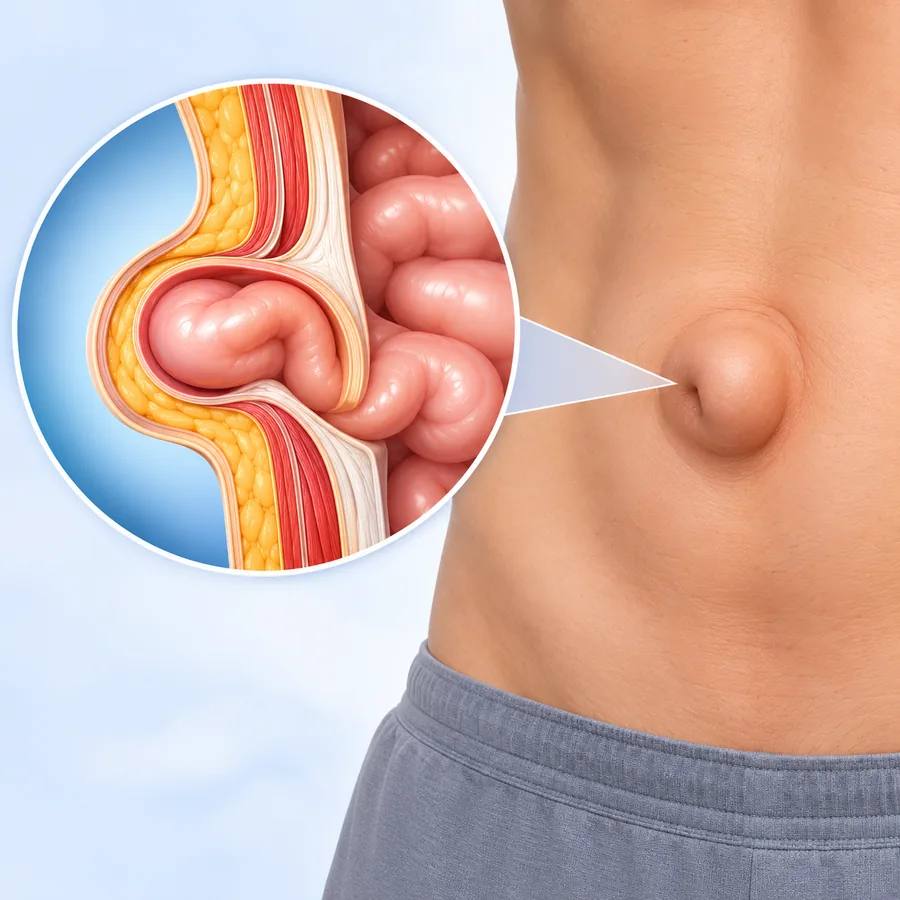
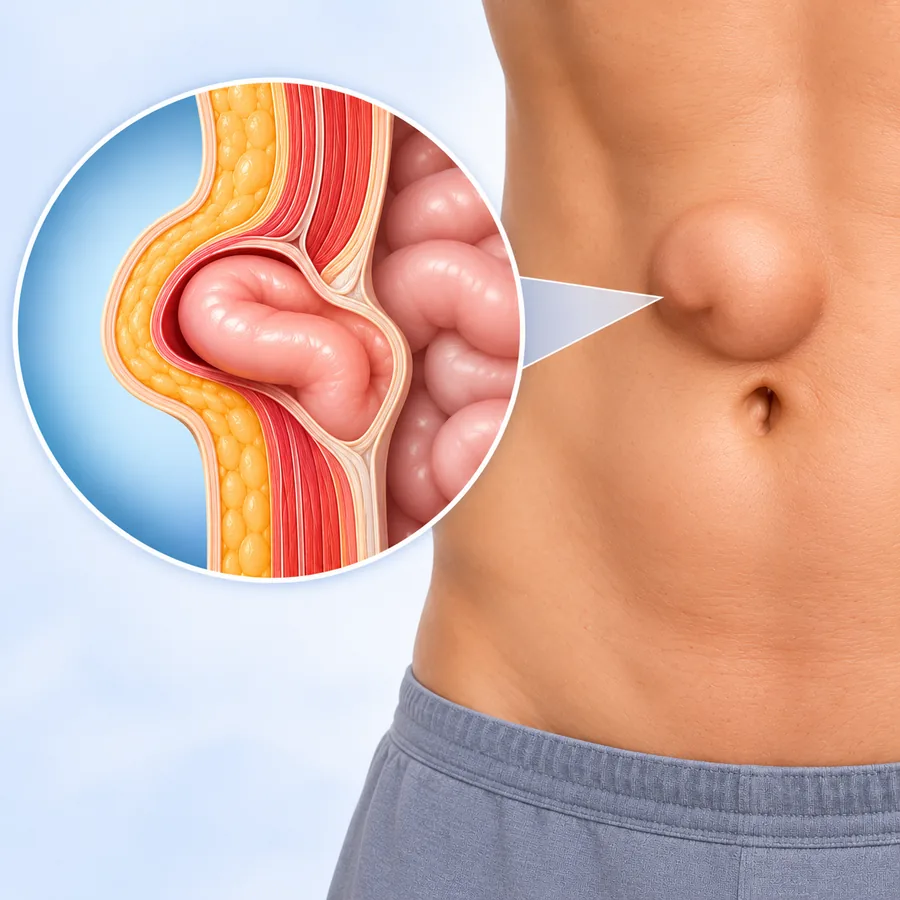
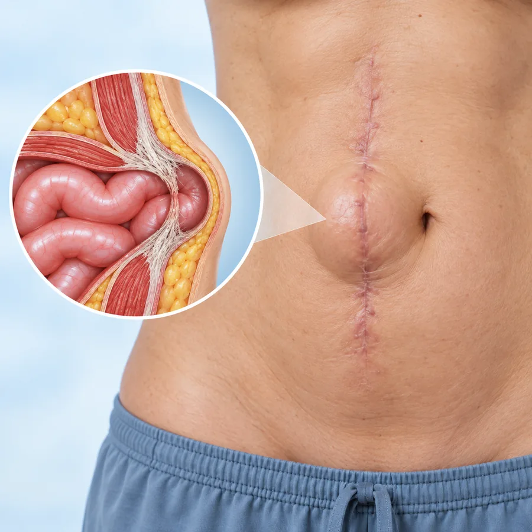
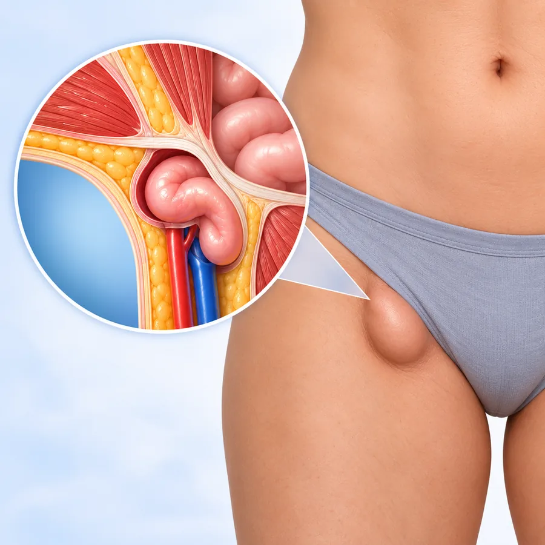
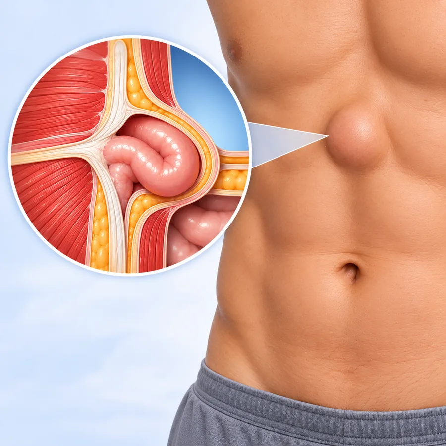
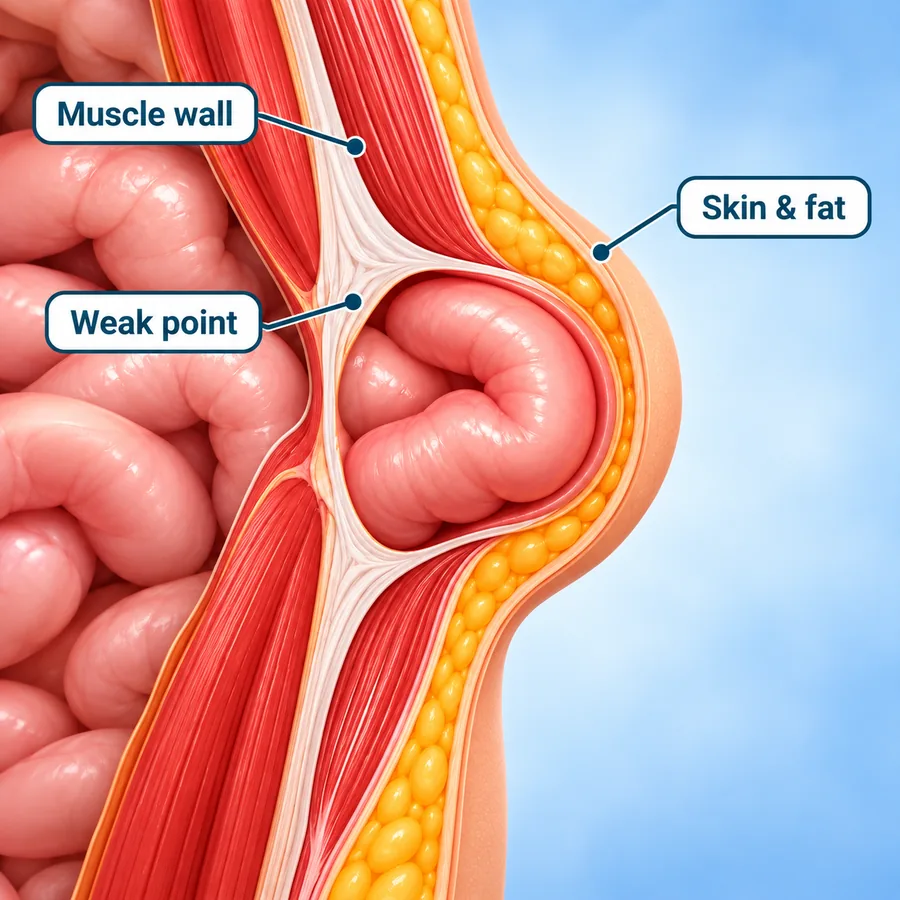

International Travelling Fellowship (SEF)
Minimal access pancreatic surgery under the mentorship of Prof. Yuichi Nagakawa
Focus Area Robotic Pancreatic Surgery
16Years of
Experience
Dr. Deeksha Kapoor
Dr. B. Ramamurthi National Gold Medal
DNB General Surgery — Batch of June 2014
Awarded for securing the highest marks nationally in the Diplomate of National Board examinations, marking a benchmark of academic and surgical excellence.
Advitya Healthcares · Kolkata & Baruipur
Already diagnosed, or told you need surgery? Get a second opinion from Dr. Deeksha Kapoor before you decide.
KolkataBaruipur
Consultation venue and timings confirmed at the time of booking
WhatsApp UsHernia surgery at Advitya Healthcares is delivered within a gastrointestinal surgical practice experienced in complex abdominal conditions. The team evaluates and treats inguinal, umbilical, paraumbilical, incisional, femoral, epigastric and recurrent hernias, with consultations available in Kolkata and Baruipur.
Your symptoms, examination findings, previous surgeries and available reports are all considered before treatment is planned. Whether a hernia is monitored or repaired — and whether an open or laparoscopic approach is suitable — is decided after clinical examination and, where required, imaging.
The surgical team is led by Dr. Deeksha Kapoor, a pancreato-biliary and gastrointestinal surgeon with training in advanced surgical oncology and minimally invasive surgery from institutions in India, Japan, Germany and France. She leads the PancreaCare+ programme at Advitya Healthcares.
Before surgery you are told what the procedure involves, what anaesthesia is planned and what recovery looks like. After surgery you receive specific advice on lifting, driving, returning to work and follow-up. A hernia that suddenly becomes painful or hard, cannot be pushed back, or is accompanied by vomiting needs emergency assessment the same day.
Surgical Gastroenterologist · HPB & GI Surgical Oncologist · CEO & Medical Head, Advitya Healthcares
Trained at the centres patients usually travel to Mumbai or Delhi for — and operating in Kolkata and Baruipur, so complex surgery does not have to mean leaving home.
Gained knowledge and achieved academic excellence at esteemed institutions
Aligned with global best practices through focused mentorships at world-renowned centers
Minimal access pancreatic surgery under the mentorship of Prof. Yuichi Nagakawa
Focus Area Robotic Pancreatic SurgeryDepartment of Pancreato-Biliary Surgery, Japanese Foundation of Cancer Research under the mentorship of Prof. Yosuke Inoue
Focus Area Surgery for Locally Advanced Pancreatic CancerDepartment of General Visceral & Transplant Surgery, University of Heidelberg under the mentorship(s) of Prof. Markus Buechler & Prof. Thilo Hackert
Focus Area Vascular Resections in Pancreatic SurgeryDepartment of HPB & Transplant Surgery, Beaujon Hospital under the mentorship(s) of Prof. Alain Sauvanet & Prof. Mickael Lesurtel
Focus Area Laparoscopic Pancreatic Surgery & Vascular ResectionsUnder the PancreaCare initiative, surgeons, medical oncologists and radiologists review complex cases together, so the plan, the operation and the recovery have more than one specialist watching over them.
Recognising the early signs can help you seek timely medical evaluation.
A swelling or lump may appear in the groin, around the navel or near a previous surgical scar.
You may experience aching, pressure or discomfort around the affected area.
The swelling may become more noticeable while coughing, lifting or straining.
The lump may gradually increase in size or become more noticeable.
Pain or pressure may occur during walking, exercise, lifting or other activities.
A painful or hard lump that cannot be pushed back requires urgent medical evaluation.
Sudden severe pain, a hard or non-reducible lump, vomiting or significant abdominal symptoms require urgent medical assessment.
Call +91 92112 21553Hernias are named after the part of the abdominal wall they push through. The type influences how it is assessed and repaired.
The most common type, occurring in the groin. It often becomes more noticeable on standing, coughing or lifting.
Discuss with our team
Occurs at or around the navel. It may be present from an early age or develop later in adult life.
Discuss with our team
Develops near the belly button, just above or below it, through a small gap in the abdominal wall.
Discuss with our team
Occurs through the scar of a previous abdominal surgery, where the healed muscle layer has weakened.
Discuss with our team
Occurs lower in the groin and may require prompt evaluation, as the opening involved is typically narrow.
Discuss with our team
Occurs in the upper middle portion of the abdominal wall, between the navel and the lower chest.
Discuss with our team
A hernia that develops again after a previous repair. Planning takes the earlier operation into account.
Discuss with our teamThe type and size of a hernia can only be confirmed by clinical examination and, where required, imaging.
A hernia occurs when tissue from inside the abdomen pushes through a weak area in the surrounding muscle wall.
The muscle layer of the abdominal wall can weaken at natural openings, at the navel, or where it has been divided during earlier surgery. Once a gap forms, pressure from inside the abdomen can push tissue through it.
Common locations are the groin, the navel and the site of a previous operation. The bulge may be easy to see, or felt only on examination.
Coughing, lifting, straining and standing for long periods all raise pressure inside the abdomen, so the bulge and any aching are often more apparent then, and settle on lying down.
The type, size and contents of a hernia guide whether it is monitored or repaired, and which approach is suitable. A lump that becomes hard and painful and cannot be pushed back needs urgent assessment.
Diagnosis and treatment should be based on clinical examination and, when required, imaging.
Specialist care with a patient-first approach.
Hernia evaluation and treatment within a gastrointestinal surgical practice.
Treatment is planned according to the patient’s symptoms, examination and individual clinical situation.
Open and laparoscopic approaches may be considered according to clinical suitability.
Previous surgeries, symptoms, examination findings and relevant reports are considered.
Clear communication before surgery, during recovery and throughout follow-up.
Access consultation through Advitya Healthcares locations in Kolkata and Baruipur.
Both approaches close and reinforce the weak area of the abdominal wall. Which one suits you is a clinical decision.
The surgeon works through a single incision made over the hernia. The tissue that has pushed through is returned to its place, and the weak area of the muscle wall is closed and, in most adult repairs, reinforced with mesh.
The repair is carried out through several small incisions using a camera and specialised instruments. Suitability depends on the type and size of the hernia, previous surgery and your fitness for anaesthesia.
The appropriate surgical approach is decided after clinical evaluation.
Your symptoms, medical history and previous surgery are discussed.
The affected area is examined to assess the hernia and its type.
An ultrasound or scan may be advised when further detail is needed.
Whether repair is required, and by which approach, is decided with you.
The planned procedure is carried out with pre-operative preparation.
Activity, lifting and follow-up advice is given before discharge.
Major surgery means a hospital stay of several days. This is how health insurance works at Advitya, so cost is not left as a guess.
Where your insurance company or TPA is accepted by the hospital, the covered amount is settled directly with them after approval. Charges your policy does not cover are paid by the patient.
Tell the hospital at admission that you have health insurance. A pre-authorisation request is sent to your insurer or TPA, and the covered amount is settled once they approve it.
Advitya Hospital Baruipur, with an ICU offering critical care and ventilator support, and 24×7 emergency cover. Consultations are also held at Advitya Kolkata — PancreaCare, Rajdanga Main Road.
Check your policy before admission. The list of accepted insurance companies and TPA partners will be published once confirmed. To check yours now, call the hospital desk.
Call +91 92112 21552Consultation, surgery and follow-up organised around the patient.
Hernia care delivered by a specialist gastrointestinal surgical team.
Consultation, theatre and diagnostic facilities used for planned surgical care.
Time to discuss your symptoms, reports, treatment options and recovery.
Consultations available in Kolkata and Baruipur.
General information only. Advice for your own condition comes from your consultation.
Most people first notice a swelling or lump in the groin, around the navel or near an old surgical scar, sometimes with an ache or a feeling of pressure. The bulge often becomes more noticeable when you cough, lift or strain, and less noticeable when you lie down.
Not always. A small hernia that causes no symptoms may be monitored, particularly if surgery carries extra risk for you. That decision is made case by case after an examination.
Medicines can ease discomfort and a support belt may make a hernia less noticeable, but the gap in the muscle wall does not close on its own. Only a repair addresses the gap itself.
When you can see or feel a bulge, when an existing one is getting bigger, or when the area aches during normal activity. Go to an emergency department the same day if the lump becomes hard and painful, cannot be pushed back, or is accompanied by vomiting.
A repair carried out through small incisions using a camera and specialised instruments. Suitability depends on the hernia type and size, previous surgery and anaesthetic fitness, so it is not appropriate for every patient.
A repair carried out through an incision over the affected area, giving direct access to the weak part of the abdominal wall. It may be appropriate for many types of hernia depending on your condition.
Mesh is used in most adult repairs because it reinforces the weak area and is associated with lower recurrence in many situations. There are circumstances where a tissue repair is preferred, and that will be discussed with you.
Recovery varies with the type of hernia, the approach used and your work. Your surgical team will give you specific advice about lifting, driving and returning to work before you are discharged.
Sudden severe pain, a hard or non-reducible lump, vomiting or significant abdominal symptoms require urgent medical assessment. Go to your nearest emergency department the same day.
Talk to the Advitya Healthcares surgical team to understand your condition and available treatment options.
A few details and our team will call you back to confirm.
We have received your appointment request. Our team will call you back to confirm the venue and slot.
For an emergency, call +91 92112 21553 now.